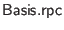

Any function call may be made a client-to-server ``remote procedure call'' if the function being called needs no features that are only available to client code. To make a function call an RPC, pass that function call as the argument to  :
There is an alternate form that uses to indicate that an error occurred during RPC processing, rather than raising an exception to abort this branch of control flow.